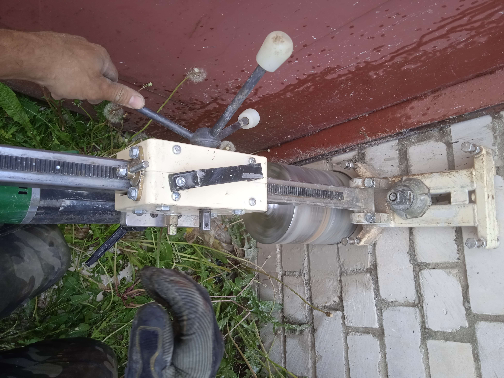

Алмазное бурение в стену. Процесс осложнялся неполнотой
перекрытия(есть риск упасть или уронить инструмент).
А это керн(то, что остаётся после алмазного бурения).
А вот и само отверстие.

Снова процесс бурения. На этот раз осложнён стеснёнными условиями
работы.
А это тоже керн, но после бурения армированного бетона.
В этот раз была поставлена весьма оригинальная задача: нужно было
пробурить отверстие для того, чтобы в него пролез человек. Процесс
осложнялся, во-первых, небольшой площадью открытого фундамента(в
процессе мешал сайдинг), а во-вторых в конструкции фундамента были
доски, замедляюшие процесс бурения. В итоге цель работы была
достигнута, и человек успешно пролез.